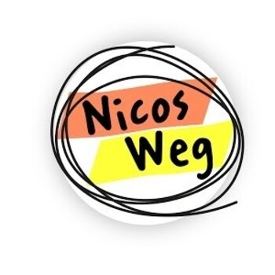
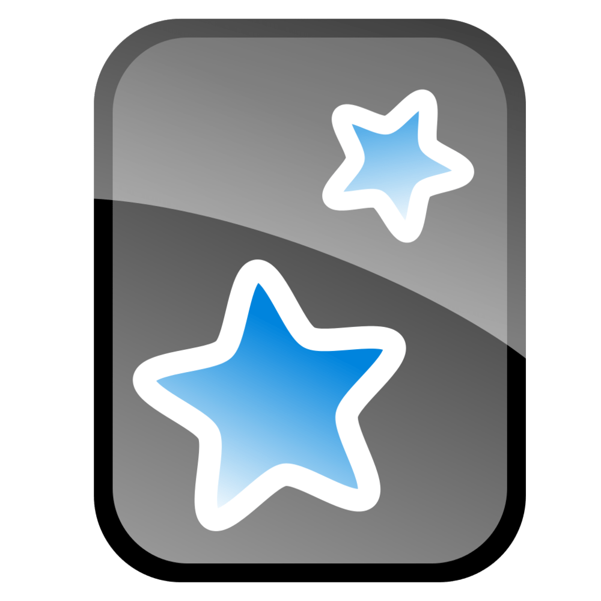
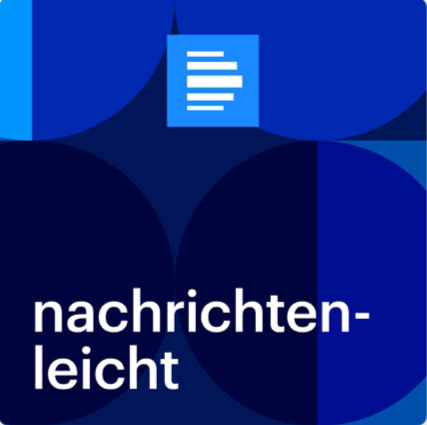
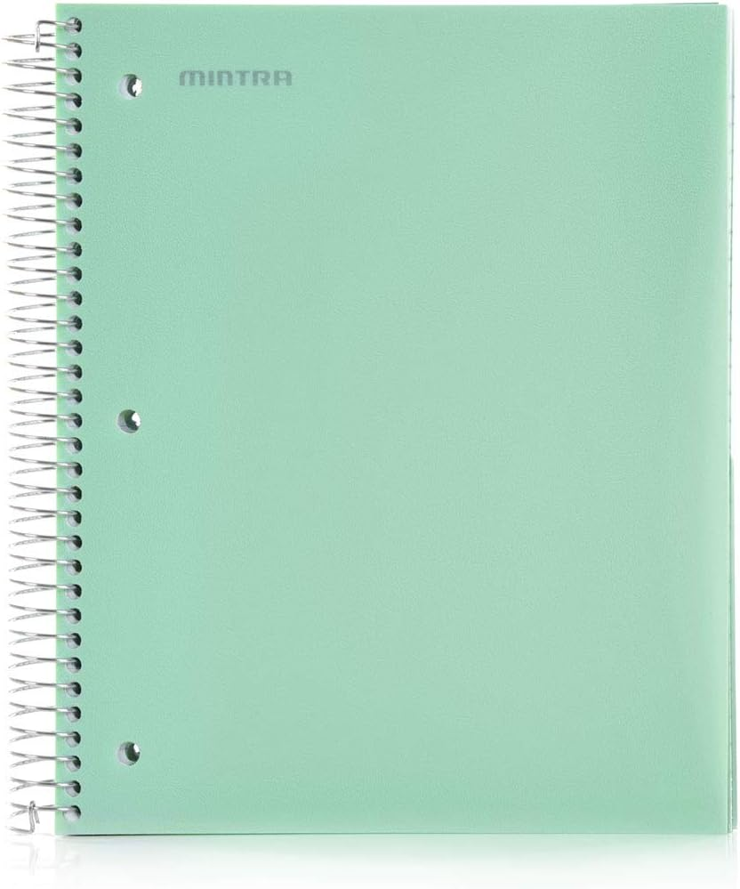

How I Am Learning German
Throughout my German-learning journey, I have used a variety of resources to build my vocabulary, improve my grammar, and become more comfortable with the language. Below are some of the resources that have been the most helpful to me, along with my personal rating and thoughts on each one.
These ratings are based entirely on my own experience, so they may not reflect how useful each resource will be for you. Everyone learns differently, and I encourage you to try different resources and find the ones that work best for you.

Nicos Weg
by Deutsche Welle (DW)
Nicos Weg is a great resource for beginning to learn German, as it is specifically designed for A1 speakers. It is free, and consists of videos and exercises that make it engaging to learn German. The only complaint that I have is that some exercises are too focused on memory and just ask you to recall what happened in the video. Nevertheless, it is still a great resource for beginners, and I highly recommend it to anyone looking to learn German.
Visit Resource →
Anki
by The Anki Project Team
Anki is by far the best flashcard app that I have ever used. It is free and includes images, audio, videos, text, and more. It allows you to create your own flashcards, or download pre-made decks, which is what I personally did. It uses spaced repetition to help you remember things better, and it is a great way to learn vocabulary. I highly recommend it to anyone looking to learn German or any other language.
Visit Resource →Easy German
by Easy Languages
Easy German is a fantastic Youtube channel focused on teaching varied levels of German through street interviews and other real-life situations. However, there are no exercises or quizzes for free to help you retain the information, so it is more of a supplementary resource rather than a primary one. Even so, it is still a great resource for learning German, and I recommend German learners to watch one video a day to help them learn the language in a more natural way.
Visit Resource →
Nachrichtenleicht
by Deutschlandradio
Nachrichtenleicht is a news source that provides news articles in accessible German. They also provide audio versions of the articles, which is great for listening practice. The articles provide a great way to learn new vocabulary, as news articles often contain words that are not commonly used in everyday conversation. I gave it 3 stars because the articles are often quite long and difficult for complete beginners to understand, so I would recommend this resource for intermediate learners rather than beginners.
Visit Resource →
Notebook
by Me
Every night, I attempt to write 3 medium-to-long length sentences in German that relate to my day. I also try to incorporate new vocabulary and grammar that I have learned. The next day, I check my sentences for any mistakes and correct them. The next time I write, I try to incorporate the corrections that I made to my previous sentences. This is a great way to practice writing in German and to reinforce what I have learned.
Why This Works →